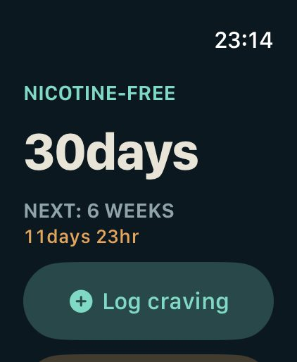
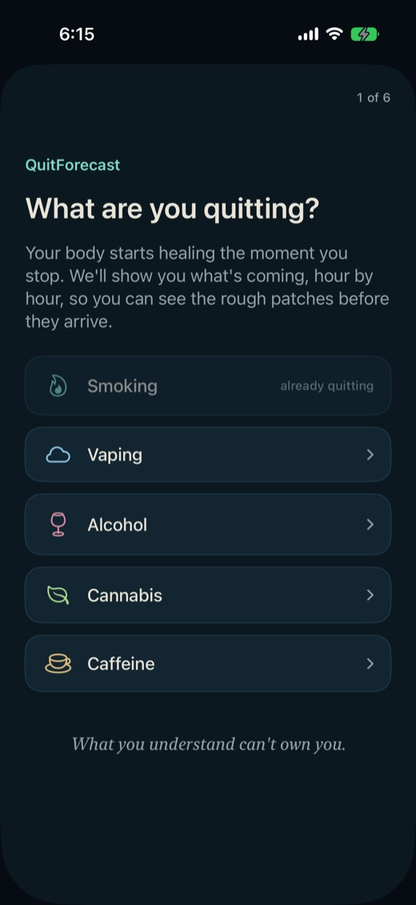
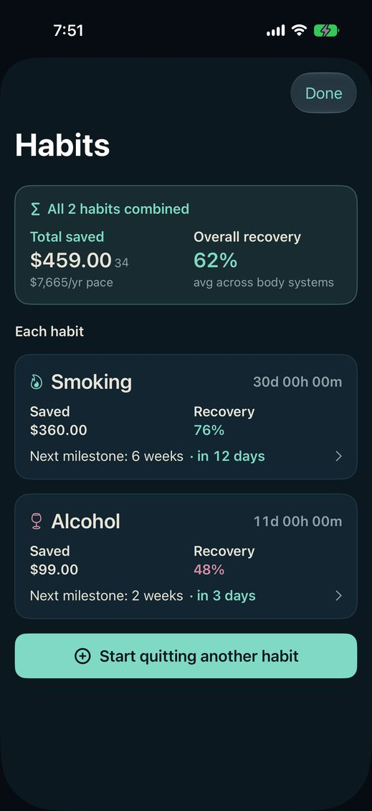
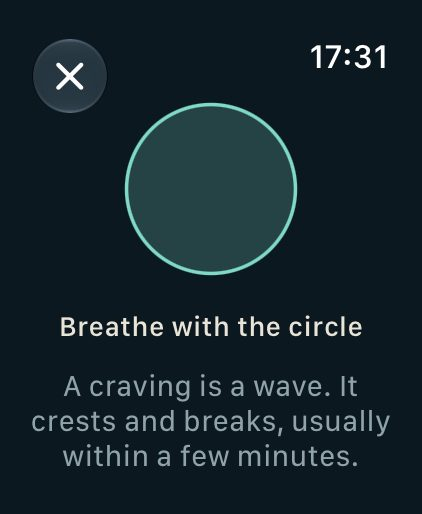
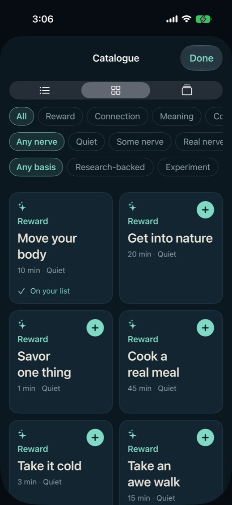
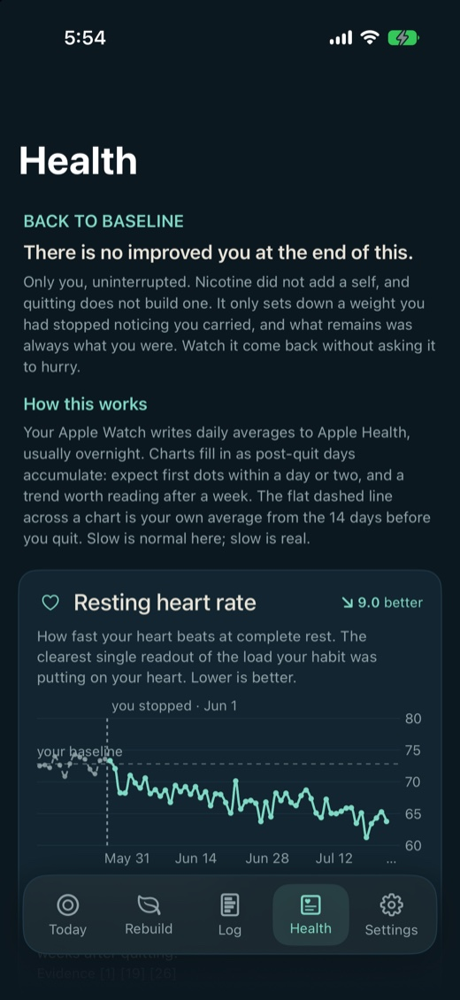
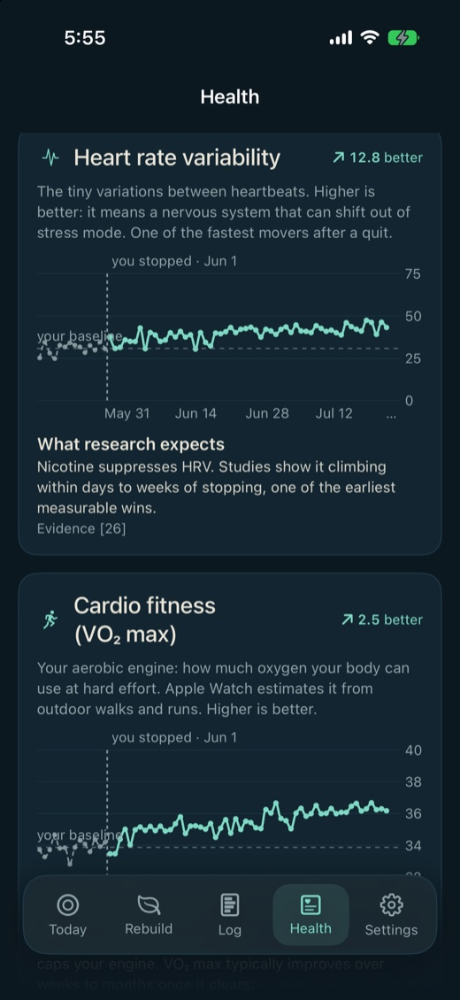
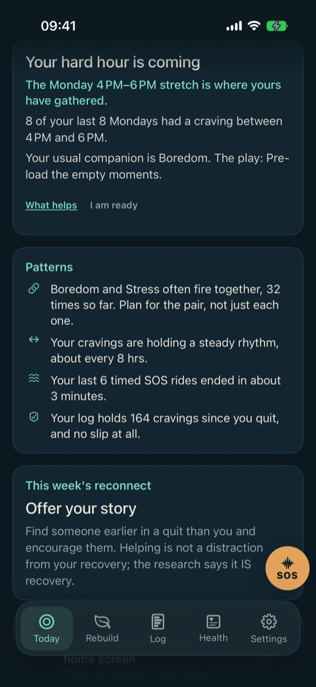

Observation, not willpower.
See your recovery coming.
The whole road back, dated and cited, from the first minutes to the years after. For quitting smoking, vaping, alcohol, cannabis or caffeine. On iPhone.
If this is attempt three or four, you are who it was built for.
Free to download, and the first week is the whole app. The crisis lines and the safety warnings never sit behind the price.


Your clean time, and the two hours your own log named. Real screens; the log is a demonstration, not a person's.
The idea
Quitting isn't a fight you white-knuckle.
It's a chance to finally know yourself, and this whole app is built for that.
Watch a craving move through you. What it's made of, how it rises and breaks. What you understand can't own you.
Nothing gets added. Something gets removed: receptors reset, sleep returns, mood lifts. You are not building a better you. You are getting yours back.
See first. Correct second. Correction that skips the watching is just willpower, and willpower is what you already tried.
Understand yourself and the habit deeply enough and quitting stops being a fight you have to win. You watch the thing rise, you watch it pass. It gets easier because you get clearer, not because you get stronger.
Built on the published record: 61 cited sources, every claim in the app named to its study where you read it, and the full library ships in the app under Settings. Where the evidence is thin, the app says that too.

The counter
A clock, not a scoreboard.
Your clean time, your money back, and every system healing underneath.
A counter that resets to zero has told you the last forty days did not happen. They happened. After a slip the button says what it does: Restart my clock, keep my history.
A tin counts the money you stopped spending. A slip never empties it: what you are saving for should never pay for one hard night.
Under the clock, every system the habit was leaning on heals on its own dated road. The finished ones say Recovered. The rest show how far along you are, and opening one names what the habit was doing to you and what is healing now.
Recovery curves are drawn from cited findings and interpolated between them, not a measurement of your body.

One system opened to its road. A demonstration history, not a person's.
More than one
Two quits, two clocks.
Quitting two things at once is one app, not two.
Each habit keeps its own quit date, its own forecast, its own log and its own next milestone. Nothing is shared that should not be: a slip on one does not touch the other's clock.
The top of the screen adds them up. The money and the recovery are yours together, even when the roads are separate.

Two demonstration quits, seeded for this picture: the money is the seed's arithmetic, not a person's.
The timeline
The whole road, dated.
Read day three before you live it.
Open any stage of the withdrawal: what is healing, what you might feel, and what helps now, at every stage of the road. The studies sit under each one.
Minutes in, you still feel fine, and the app puts that to work: Clear them out first: the pack, the spare in the car, the lighters, the ashtrays.
Every hour of it
There on minute one, and it never scolds.

The timeline starts the minute you set a quit date.
Craving SOS
The wave, timed.
One clock rides the whole wave. You don't get to call it over early; you outlast it.
A craving crests and breaks in minutes whether or not you fight it. So ride it: breathe, scan, ground, or play a game until it dies. At zero the clock says Outlasted.
Urge surfing and game distraction are studied technique, and the screens that teach them carry their citations.
Beside the tools sits a cited chapter called The why: seven short cards on why this pull exists at all, from the wanting machinery to the after-work reach, one card per visit. Nobody's brain is called broken; the machinery is explained so it can be retrained. The Big questions sit beside it: one honest question at a time, for the cravings that are really about something else.
You're the one watching. It's the one passing.
The crisis lines are yours whether you ever pay or not, always one tap away. The worst ten minutes of your week are not a sales moment.
One of the Big questions, whole: "Everything around you is built to keep your attention fed, and the appetite still is not full. What is it actually hungry for?"
And when the stakes are medical, the toolkit yields: through a heavy drinker's first days, the crisis lines lead the SOS screen above every tool.

Apple Watch
The tap that doesn't need your phone.
The craving does not wait for you to find your phone, so the log does not either.
One press on your wrist logs a craving. If the phone is out of range it says so and waits, and it only says Logged once the phone actually has it. An app whose whole personality is not claiming more than it can support does not get to fake a checkmark.
After the tap, an optional sheet offers strength, trigger and who you were with. Skipping any of it costs nothing: the craving is already logged either way. If you track more than one quit, the wrist switches between them without touching the phone.
The breath runs on the watch itself, with no phone in the room. That is the point of it: the wrist is what you have at the moment you need something to do with your hands.
Your clean time and your next milestone are on the glance, counted from the watch's own clock. The complication arrives in an update; today the app is the glance and the moves above.

The wrist is optional; the week of the whole thing is not smaller without it.
Rebuild
The hole it leaves has four names.
Reward, connection, meaning, competence. The habit was faking all four.
The weeks between cravings decide this. A catalogue of real moves rebuilds each one, stating two plain facts before you commit: how long it takes, and how much nerve it asks. The scale rates the move, never you.
One ladder is the whole idea made literal: sit with yourself for ten minutes, then twenty, then an hour. That restlessness is the exercise, not a sign to stop.
The shelves argue in the app's own words. Reward: "Relearning to feel ordinary pleasure." Connection: "Corruption begins in the lack of relationship." Meaning: "Knowing yourself, and what this is for." Competence: "Building something that's yours."
The community board lives here too: moves submitted by people quitting, each read by a person before it is public, voted on by everyone. Its own door says it plainly: "Suggest a move, vote up what worked for you, and add any move to your list straight from its page."
A fifth shelf, Spirit, joins the four when a faith or philosophy pack is on.


A demonstration board, seeded for this picture: the posts and the vote counts are the app's own fixtures, not people's.
Apple Health
You already have a before.
Fourteen days you did not know you were recording.
Heart, lungs, breath and blood chart themselves against your own baseline from the two weeks before you quit, with what research expects printed beside your line. Your chart is allowed to disagree.
Needs an Apple Watch or similar. Read fresh from Apple Health on every visit and never stored: no series on your phone, none in the backup, nothing to leak.
The charts read fresh from Apple Health each time the tab opens, as daily averages against your baseline. One example of what was hiding: nicotine suppresses heart rate variability, and studies show it climbing within days to weeks of stopping.

A demonstration chart: nothing is stored, so there was no saved series to photograph. The chart, the baseline and the citation are real; the numbers are not somebody's.

The structure is the point: what the research expects sits under the chart, with its source, so the two can be read against each other.
The heading at the top of that tab is the app's own: there is no improved you at the end of this. Only you, uninterrupted.
Your watch has been keeping a record since before you decided. Put it to work.
The craving log
Your habit has a shape.
Two hours out of your own log, and it would rather say nothing than guess.
Two taps to log a craving. The app finds the hours yours gather, the triggers that cost you most, ranked by how hard they hit and not only how often, and the two that tend to arrive together. Your top two carry a research-backed play each. Nothing is borrowed from an average: it is your record speaking, or nothing. Silence is a reading.
The everyday reading counts your last thirty days; a weekday pattern needs your last eight of that weekday.
Your cravings are already on a schedule. You may as well have a copy of it.
Once your hours are real, the app can tell you before they open: a card on Today always, and a check-in notification if you opt in. Meet the hour knowing it is yours.
The play for Stress, in the app's own words: "Build a faster exit than the habit was."
A trigger you name yourself gets the general if-then play. Two silences are deliberate: Other names nothing to plan for, and a play withheld for your substance never returns through a side door.
How the window is found
- Until your own log has earned the claim, the app says nothing at all.
- There is no red on the chart. Only your own hours, and the two the app is willing to name.
- 7 of your last 9 days had a craving between 8 PM and 10 PM.
A demonstration log, one that happens to peak in the early evening. Yours will name different hours.

The two hours come from your own taps, and the first week of the whole app is free.
Privacy
Nothing leaves.
No account, because there is nothing to sign in to. Your record lives on your phone.
Six things can leave, and each one is a thing you do on purpose. An iCloud backup, into your own private database that we cannot read. A post to the community board, under an anonymous identifier that is never your name. A vote on somebody else's post, stored under that same identifier so a tap can be taken back. A report, if you flag a post for review. A feedback message, if you write one. And a support conversation, if you start one, addressed by a random ID that is never your name. That is the whole list.
Paying is not on the list because the app never touches it: premium is bought on Apple's own purchase sheet, between you and Apple.
Reading the board posts nothing and sends nothing you wrote. Opening it does ask iCloud who you are, the same check the backup makes, and that is all.
This page is part of the same promise. It loads no fonts, no executable script and no trackers, and sets no cookies. Its own content policy tells the browser to refuse them, so it is enforced rather than promised. Read the privacy policy, which is short and in plain words.
Settings
Everything loud is off by default.
The rest of it, one line each.
Voices
Normal, Cheeky, Strict coach.
Packs
Stoic, Christian, Islamic, Jewish. The picker's first row is Off.
iCloud backup
Off by default.
The board
Read it without an account. Posting is anonymous by design.
Widgets
A widget for your home screen, and a live count on your lock screen through the first three days.
Apple Watch
One-tap logging from the wrist.
Notifications
Opt in. Window check-ins come at most once per habit per day; milestone alerts arrive as the milestones do, and a Majors-only switch trims them to the big ones.
Yours to take
Export a spreadsheet, or delete everything.
Every switch above ships set to quiet.
Compatibility
What it runs on.
An iPhone is all it needs. The rest is optional, and the app says so when you reach each door.
iPhone
iOS 18 or later: any iPhone from the iPhone XS and XR onward. Built for iPhone; there is no iPad or Mac app.
Apple Watch
Optional. watchOS 11 or later, paired to the phone. The wrist carries your counter, one-tap craving logging (with a skippable detail sheet after the tap), the SOS breath, and a switcher if you track more than one quit. Everything else lives on the phone.
Widgets, Lock Screen, Control Center
Home Screen widgets, Lock Screen accessories, and Control Center buttons for logging and SOS, all part of iOS 18. Through the first three days a Live Activity keeps your counter on the Lock Screen, and in the Dynamic Island on the iPhones that have one.
Apple Health
Optional. Five metrics, read on your phone and never sent anywhere: resting heart rate, heart rate variability, cardio fitness, respiratory rate and blood oxygen. They arrive in Health from an Apple Watch or any other device that writes them; without a source, the cards wait rather than guess.
Siri
"Craving SOS in QuitForecast" opens the breath directly, with the app closed.
Accessibility
Dynamic Type at every size, including the accessibility sizes, with layouts that reflow instead of truncating. VoiceOver labels and announcements throughout. Reduce Motion honored, so the forecast's reveal and the milestone celebrations play without motion. The large content viewer on the tab bar. Dark and light appearance. No text under 11 points on the phone, or 10 on the watch and widgets, held by a lint in the build.
Price
A week of the whole thing, free.
The trial is the app, entire. It starts the moment your forecast, the timeline above, first draws itself.
The week ends on its own and costs nothing. Paying is a separate choice you make in the app, on Apple's own purchase sheet.
Premium is the whole app
- Your risk window: the two hours, the chart of your own cravings, and the heads-up before they open
- The full timeline, hour by hour, with the studies under each milestone
- Every recovery curve, and your five Health cards
- The full Rebuild catalogue, every SOS tool, and all four faith and philosophy packs
Most of these habits run to thousands a year. The app asks $39.99 of it.
One person built QuitForecast, after quitting himself. No ads, nothing about you for sale: your subscription is the whole business model, and it is what builds the app.
Yours even without it
- The crisis and support lines
- The alcohol safety warnings, and their 911 rule
- Your data: the full export, and delete everything
- A person answering in Get help
Subscriptions renew until you cancel, in your Apple account settings; cancel and it runs out at the end of the term you paid for. Purchases run under Apple's standard license agreement, the terms of use for the app.
If your log never clears the bar, no window ever appears, and it is not being withheld from you: it does not exist. The rest of Premium stands either way. The window is the one part the app will not fake to look like it is working.
Start free.
A person answers.
Inside the app, with no ticket number.
Settings, then Get help. Usually you hear back within a day, and anonymous feedback has its own channel beside it.
Not installed yet? info@quitforecast.com reaches the same person.